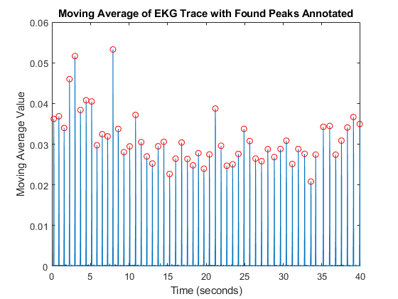

clear; clc;
load ekg-data-unknown.mat
heart_beat_signal = v5;
derivative = diff(heart_beat_signal);
squares = derivative.^2;
moving_average = movmean(squares,10);
[peaks,locs] = findpeaks(moving_average,'MinPeakProminence',.02);
num_beats = length(peaks);
fprintf('The algorithm found %f peaks\n',num_beats);
figure;
plot(time,heart_beat_signal);
title('Plot of Single Trace EKG');
xlabel('Time (seconds)');
ylabel('V5 Signal (volts)');
figure;
new_time=time(2:end);
plot(new_time,moving_average);
hold on;
plot(new_time(locs),peaks,'or');
title('Moving Average of EKG Trace with Found Peaks Annotated');
xlabel('Time (seconds)');
ylabel('Moving Average Value');
The algorithm found 54.000000 peaks
